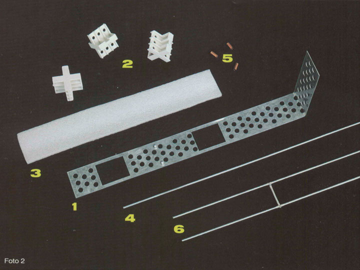
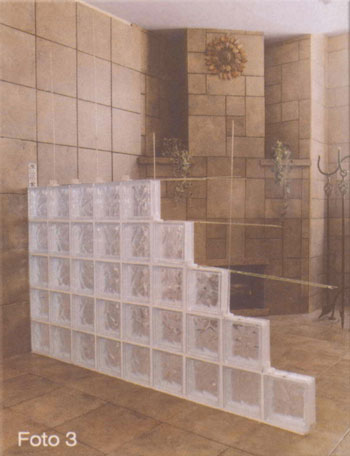
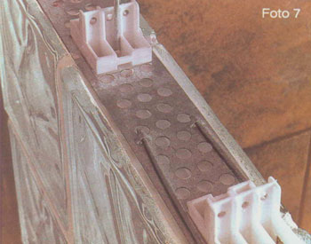
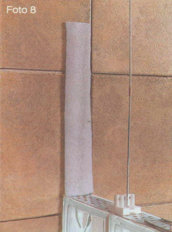
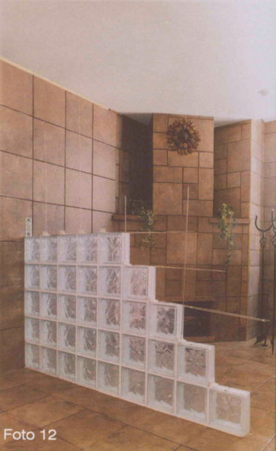

Vidrioblock
To achieve an impeccable installation of glass block, the main obstacles to be resolved are:
The glass block panels do not have any structure and the force of wind or any other type of force can affect them.
Due to the settling of constructions and the natural characteristics of glass, glass block passes from an elastic to a rupture phase, without passing through an intermediate phase, typical of other construction materials like concrete, clay and metals.

Creaprac offers this installation guide, INSTALPRAC, where we show how glass block is to be installed using the appropriate materials to:
- Achieve glass block panels with a structure that can resist the different forces that may act on the panel.
- Achieve glass block panels where the rupture tensions on the glass blocks caused by the settling of constructions, may be absorbed.
Picture 1 shows a glass block panel installed and finished with the products of CREAPRAC.
Picture 2 shows the six installation products for glass block.
- Anclaprac: Galvanized steel strip that is anchored to the wall by using plastic anchors and screws.
- Viseprac: Spacer in the form of a cross that is used in each intersection of glass blocks to form the separation to recieve the adhesive in the form of mortar cement.
- Expaprac: Is a plastic expansion strip that absorbs the rupture tensions on the glassblock panels, which originate by the dilatation movements of the construction.
- Alamprac: Galvanized steel wire that gives support to the glassblock panel. It is placed in every 2 vertical columns of the panel.
- Unionprac: Copper coupling to join together two soporprac and two alamprac and make them longer to reach the length and height of the glass block panel.
- Sorporprac: Galvanized steel wire ladder that gives support and structure to the glass block panel. It is installed in every two horizontal rows of the panel.


Picture 3 shows a glass block panel in the process of installation using the products of CREAPRAC.
The first row of glass blocks of the panel are adhered to the floor using an appropriate mortar cement. To level the glass blocks on each row be sure to hit them gently with a plastic hammer, since by using one of metal may cause fractures on the glass block that will be visible with time.
To give support and an integral structure to the panel, use the soporprac in every two rows, and in every two columns install the alamprac
The viseprac is installed in each intersection of glassblock, leaving the hollow side in a vertical position, this is very important so that the alamprac may pass through, as shown in picture 4.


The unionprac joins the tips of the soporprac when the length of the panel is larger that the length of the soporprac, as shown in picture 5.
Using pressure pliers, press the unionprac in the edge to hold together the tips of two soporpracs.
Two alampracs are also joined with the unionpracs.
The anclaprac is bended in 90 degrees in the position that permits the visepracs to pass through the holes of the anclaprac as shown in picture 6.
The vertical part of the anclaprac is fastened to the wall using two plastic anchors and screws.


Fasten the soporprac to the anclaprac by introducing a the tips of the soporprac in the clips of the anclaprac, as shown in picture 7.
In order that the settling movements of the construction do not affect the glass block, a space between the panel and the walls and the panel and the ceiling should be left. Place the expaprac in this space, so that the rupture loads due to those movements may be absorbed in the spongy material of the expaprac.
The expaprac is placed over the vertical part of the anclaprac using silicon adhesive as shown in picture 8. The expaprac comes in a length of 40 cm for installation of soporpracs and anclapracs in every two rows. For installations of soporpracs and anclapracs in every row, cut the expaprac in half.
The expaprac should cover all the perimeter of the glass block panel that touches the walls and the ceiling.


Since the viseprac that is use for the glassblock that touches the wall does not fit, cut one of its sides and use that piece as shown in picture 9.
In every row, in between two visepracs, spread the mortar cement to reacieve the glass block of the upper row as shown in picture 10.
No mortar cement should be use on the side of the glass block that touches the expaprac. To all the other glass blocks that are going to be installed, mortar cement should be spread on the side that is going to be in contact with the glass block previously installed.
Clean the excess of mortar cement from the surface of the glass blocks, and fill the grout lines using an antibacterial sand grout in what ever color you select.


Do not use mortar cement in the union between the glass blocks of the panel with the wall or the ceiling.
The edge of this glass blocks should be filled with silicon, as shown in picture 11.
Spread the silicon in the edge before the silicon dries to obtain a uniform and nice finish.
Continue installing the rows of glassblocks until the panel is finish.
If the last row of glassblocks that meets the ceiling does not fit in the available space, two solutions may be use.
You may cut the glass block of that row with a water saw for tile, to the exact measurement for them to fit, or you may lower the ceiling to meet the last row of glass block of the panel, using dry wall panels for that purpose.
Do not fix the alamprac to the ceiling. The end of the alamprac that meets the ceiling is left floating in the mortar cement.
Do not install the anclaprac in the last row of glass block that meets the ceiling, but do install the expaprac between the ceiling and that last row of glass blocks.

Final Notes
It is not recomended to install glass block panels with a length and a height larger than 10 feet.
If the glass block panel has larger dimensions than those, use as support a column of concrete or steel to divide the panel in the dimensions recomended, and install that glass block that meet that column as if it were a lateral wall or a ceiling to the panel.
By being the soporpracs and alampracs of galvanized steel wire, the anclaprac of galvanized steel and the unionpracs of copper, corrosion by oxidation does not appear on them, so there is no risk that the mortar cement or the grout will get affected in their color.
Being the viseprac hollow, the mortar cement passes through it, avoiding in this way an air bubble that weakens the structure of the panel.
Never use the glass block panels as supporting walls.
In curved installations use the soporprac where the curvature of the panel permits it, and where this is not posible, use 2 alampracs, which can bended to the desired curvature.
As mortar cement you can use a thinset cement for zero absortion ceramic tile, and as grout use an anti fungal grout for tile.
When by desing a glass block panel starts in a wall but does not reach the other wall, you can finish the edge in several ways. Use a wood finish, or use pieces of a ceramic, marble or granite tile, cut to the width of the glass block.